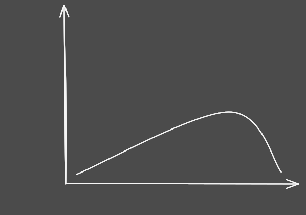
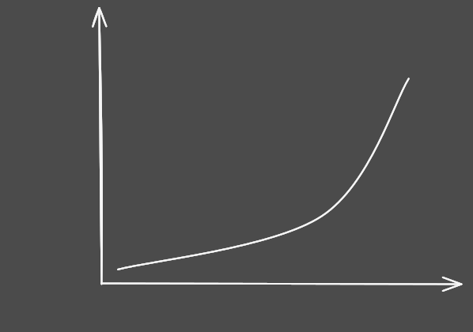
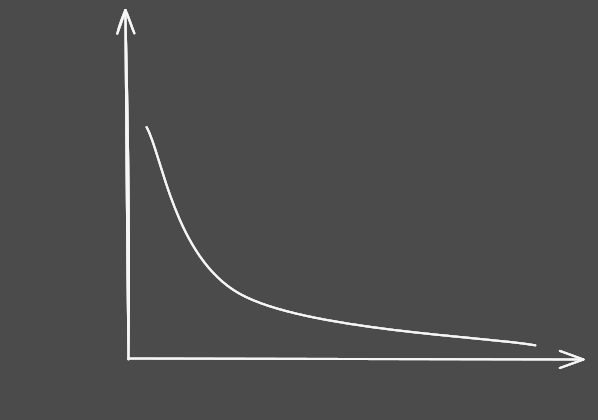

Lecture No. 5
Dated: 05-11-2024
Frequency Curve
The frequency curve does not need to touch all plotted points; its purpose is to illustrate the overall distribution pattern.
We can draw the curve using a free-hand method, as it is a theoretical concept.
When the histogram's class intervals are small and the number of classes is large, the rectangles will appear narrow.

Although the frequency curve is theoretical, it is valuable for analyzing real-world problems.
This is because real-world data often closely approximates these theoretical curves, making it valid to use the properties of mathematical curves to assist in analysis.
Types of Frequency Curves
Symmetrical Frequency Curve
{kind=link}
If we place a vertical mirror right in middle, it would reflect the curve perfectly.
{kind=link}
Moderately Skewed Frequency Curve
Positively Skewed
it is the curve whose right tail is longer than the left one.
{kind=link}
Negatively Skewed
it is the curve whose left tail is longer than the right one. 
{kind=link}
Extremely Skewed Frequency Curve
Positively Extremely Skewed
This one is also called J shaped.
{kind=link}
This situation arises when the highest frequency is at the end of the frequency table.
For instance, considering the death rates of adult males across age groups from 20 to 79 years, we might see data like this:
| Age Group | No. of deaths per thousand |
|---|---|
| 20 - 29 | 2.1 |
| 30 - 39 | 4.3 |
| 40 - 49 | 5.7 |
| 50 - 59 | 8.9 |
| 60 - 69 | 12.4 |
| 70 - 79 | 16.7 |
Negatively Extremely Skewed
This one is also called reverse J shaped.
{kind=link}
U-shaped Frequency Curve
Considering death rates across all age groups results in a U-shaped distribution.
{kind=link}
The most common type of frequency distribution encountered is the moderately skewed distribution, observed in various natural and social phenomena.
For instance, collecting data on students' weights, heights, and other attributes from a class will typically yield a moderately skewed histogram and frequency curve.
We have explored different shapes of frequency distributions for continuous variables, which also apply to discrete variables.
Various Types of Discrete Frequency Distribution
Positively Skewed Distribution

Negatively Skewed Distribution

Symmetric Skewed Distribution

Cumulative Frequency Distribution
| Class Boundaries | Frequency | Cumulative Frequency |
|---|---|---|
| 29.95 - 32.95 | 2 | 2 |
| 32.95 - 35.95 | 4 | 2+4 = 6 |
| 35.95 - 38.95 | 14 | 6+14 = 20 |
| 38.95 - 41.95 | 8 | 20+8 = 28 |
| 41.95 - 44.95 | 2 | 28+2 = 30 |
| 30 |
The cumulative frequency column in the table summarizes the total observations counted from the first value of X up to a specific X value.
For continuous variables, cumulative frequencies indicate the total frequency from the lower class boundary of the lowest class to the upper boundary of the considered class.
For example, 6 cars have mileage less than 35.95 miles per gallon, while 28 cars show mileage less than 41.95 miles per gallon.
Such a cumulative frequency distribution is called a “less than” type of a cumulative frequency distribution.
Cumulative Frequency Polygon or Ogive
A “less than” type ogive is obtained by marking off the upper class boundaries of the various classes along the X-axis and the cumulative frequencies along the y-axis, as shown below

The cumulative frequencies are plotted on the graph paper against the upper class boundaries, and the points so obtained are joined by means of straight line segments.

It should be noted that this graph is touching the x-axis on the left-hand side.
This is achieved by adding a class having zero frequency in the beginning of our frequency distribution.
| Class Boundaries | Frequency | Cumulative Frequency |
|---|---|---|
| 26.95 - 29.95 | 0 | 0 |
| 29.95 - 32.95 | 2 | 0+2 = 2 |
| 32.95 - 35.95 | 4 | 2+4 = 6 |
| 35.95 - 38.95 | 14 | 6+14 = 20 |
| 38.95 - 41.95 | 8 | 20+8 = 28 |
| 41.95 - 44.95 | 2 | 28+2 = 30 |
| 30 |
With the first class having a frequency of zero, the cumulative frequency polygon touches the x-axis on the left.
To close the polygon on the right, connect the last point to the X-axis with a vertical line.

Example
For a sample of 40 pizza products, the following data represent cost of a slice in dollars (S Cost).
| PRODUCT | $ cost |
|---|---|
| Pizza Hut Hand Tossed | 1.51 |
| Domino's Deep Dish | 1.53 |
| Pizza Hut Pan Pizza | 1.51 |
| Domino's Hand Tossed | 1.90 |
| Little Caesars Pan! Pizza! | 1.23 |
| Boboli crust with Boboli sauce | 1.00 |
| Jack's Super Cheese | 0.69 |
| Pappalo's Three Cheese | 0.75 |
| Tombstone Original Extra Cheese | 0.81 |
| Master Choice Gourmet Four Cheese | 0.90 |
| Celeste Pizza For One | 0.92 |
| Totino's Party | 0.64 |
| The New Weight Watchers Extra Cheese | 1.54 |
| Jeno's Crisp'N Tasty | 0.72 |
| Stouffer's French Bread 2-Cheese | 1.15 |
| Ellio's 9-slice | 0.52 |
| Kroger | 0.72 |
| Healthy Choice French Bread | 1.50 |
| Lean Cuisine French Bread | 1.49 |
| DiGiorno Rising Crust | 0.87 |
| Tombstone Special Order | 0.81 |
| Pappalo's | 0.73 |
| Jack's New More Cheese! | 0.64 |
| Tombstone Original | 0.77 |
| Red Baron Premium | 0.80 |
| Tony's Italian Style Pastry Cruse | 0.83 |
| Red Baron Deep Dish Singles | 1.13 |
| Totino's Party | 0.62 |
| The New Weight Watchers | 1.52 |
| Jeno's Crisp'N Tasty | 0.71 |
| Stouffer's French Bread | 1.14 |
| Celeste Pizza For One | 1.11 |
| Tombstone For One French Bread | 1.11 |
| Healthy Choice French Bread | 1.46 |
| Lean Cuisine French Bread | 1.71 |
| Little Caesars Pizza! Pizza! | 1.28 |
| Pizza Hut Stuffed Crust | 1.23 |
| DiGiorno Rising Crust Four Cheese | 0.90 |
| Tombstone Special Order Four Cheese | 0.85 |
| Red Baron Premium 4-Cheese | 0.80 |
To construct the frequency distribution, note that data values are to two decimal places, so class limits should match, and class boundaries should have three decimal places.
First, identify the maximum and minimum values and calculate the range.
| Class Limits |
|---|
| 0.51 - 0.70 |
| 0.71 - 0.90 |
| 0.91 - 1.10 |
| 1.11 - 1.30 |
| 1.31 - 1.50 |
| 1.51 - 1.70 |
| 1.71 - 1.90 |
Stretching the class limits to the left and to the right, we obtain class boundaries as shown below:
| Class Limits | Class Boundaries |
|---|---|
| 0.51 - 0.70 | 0.505 - 0.705 |
| 0.71 - 0.90 | 0.705 - 0.905 |
| 0.91 - 1.10 | 0.905 - 1.105 |
| 1.11 - 1.30 | 1.105 - 1.305 |
| 1.31 - 1.50 | 1.305 - 1.505 |
| 1.51 - 1.70 | 1.505 - 1.705 |
| 1.71 - 1.90 | 1.705 - 1.905 |